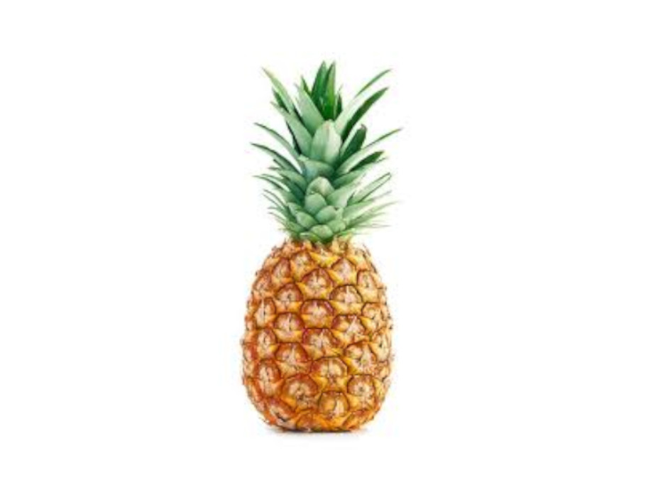
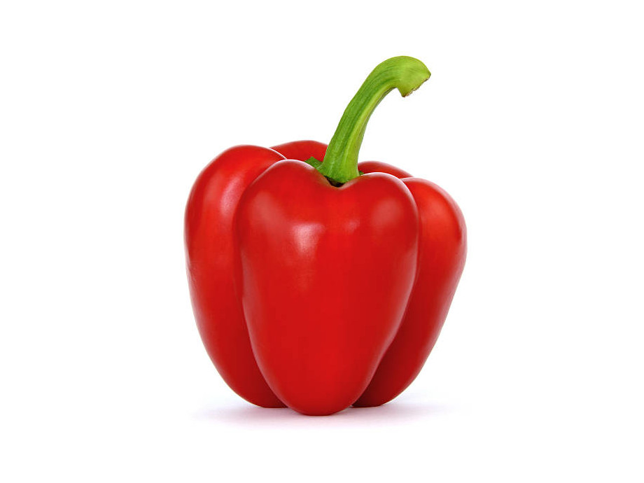
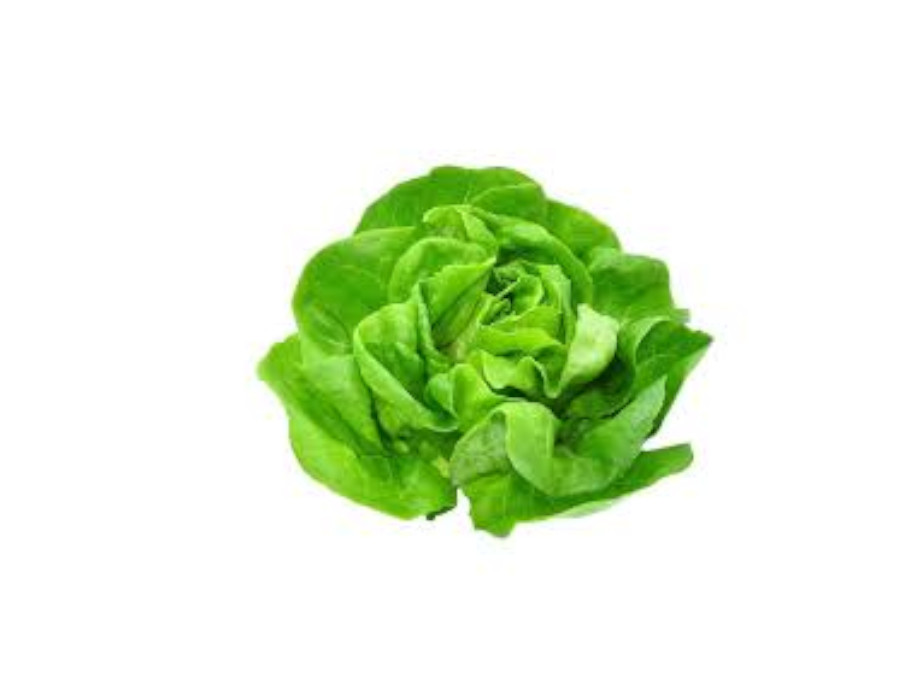

Frutas y derduras frescas.
Esta es nuestra tienda onnline.
Esta es una tienda onnline donde puedes comprar diferentes tipos de frutas y verduras para tu consumo.
Esta es una tienda onnile en donde puedes encontrar una gran variedad de frutas y
verduraa frescas ideales para tu consumo, los productos varian mucho de precio, por lo que te recomedamos
elegir los que más se te acomoden a tu bolsillo.
Los productos son 100% naturales sembrados, cosechados y traidos desde el campo a
tu mesa. Son productos libres de quimicos que afectan el sistema inmunológico de las personas que los
consumen
Nosotros exportamos nuestros productos mediante camiones que los llevan del campo
a la ciudad para despues distribuirlos por supermercados, tiendas de barrio fruvers y hasta nosotros mismos
vendemos una parte.
Piña
La piña es una fruta tropical rica en vitamina C, manganeso y antioxidantes. Se puede utilizar en ensaladas, jugos, postres y como guarnición para carnes y mariscos ensaladas y postres.
Pimenton
El pimentón es un condimento hecho de pimientos secos y molidos. Se utiliza para agregar sabor y color a los platos, especialmente en la cocina española y mexicana.
Lechuga
La lechuga es una verdura de hoja verde rica en vitamina A, vitamina K y antioxidantes. Se puede utilizar en ensaladas, sándwiches y como guarnición para sopas y platos principales.